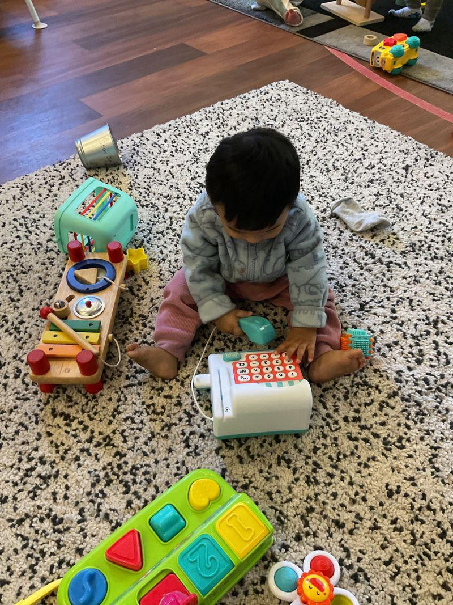

Growing, Learning & Discovering 🌱
Every day brings something new to explore. Osiris loves experimenting, observing and figuring things out in his own way.

Figuring out how things work 🔎
A little pull-back car has become one of his interesting discoveries: pull it backwards, let it go, and watch it move forward.
The xylophone brings another discovery — tapping it creates sound and turns playtime into a little musical experiment.
Create & Build
Blocks and stacking cups give Osiris opportunities to put things together, build them up and sometimes knock everything back down again.
Learn & Communicate
He waves hello and goodbye, greets with Namaste and is finding more ways to communicate with the people around him.
Explore Books
Interactive books are especially interesting when there is something to flip, open, touch or discover.
Move & Play
Running, climbing, crawling through tunnels and exploring his little push bike keep him moving.
Small discoveries, big curiosity.
🚗 Pull it back...
Let it go and the car moves forward.
🎵 Tap the xylophone...
It makes a sound.
📖 Something is hiding...
Flip the page and find out.
👋 Someone is leaving...
Time to wave goodbye.
🙏 Someone says Namaste...
Namaste back.
🧱 Stack it up...
And sometimes knocking it down is even better.
The world itself is one big learning space.
Animals, water, sand, transport, playgrounds, books, people and new surroundings all give Osiris something different to observe and explore.
See what Osiris loves →